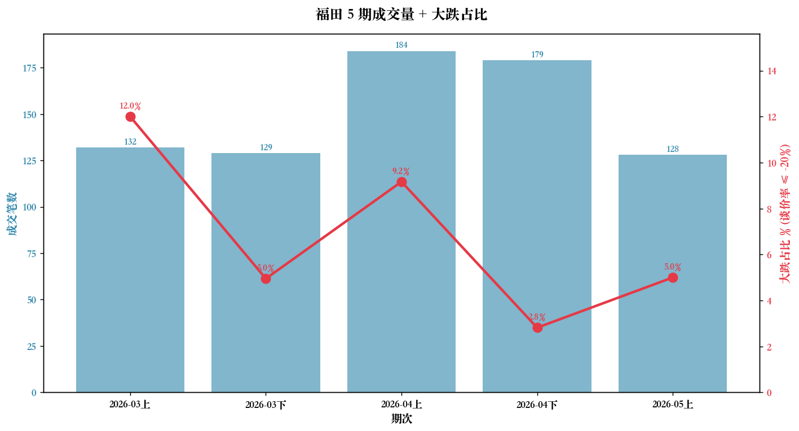
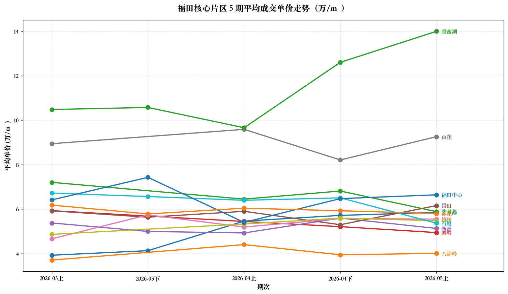
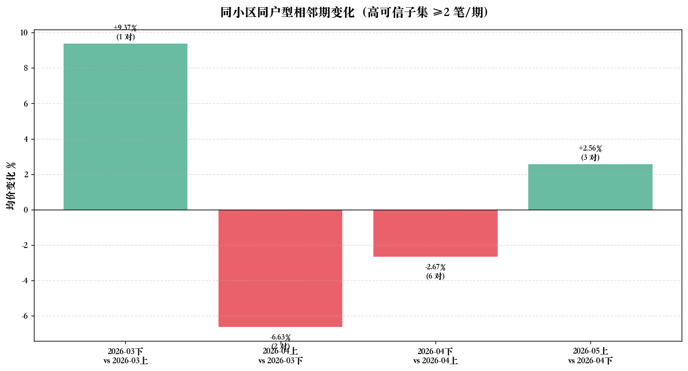
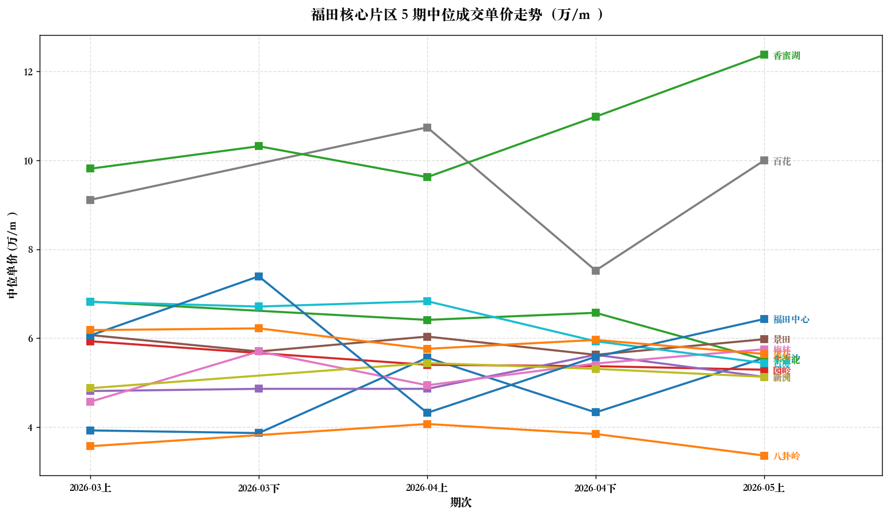

2026 年 3 月上 → 5 月上（5 个半月期）
福田过去 5 期市场总体平稳。成交量 4 月达高峰（184 + 179 笔）后 5 月回落到 128 笔；同小区同户型在 ±3% 内震荡，没有持续单边方向。低总价段（≤200 万）的砍价深度依然显著高于其他段（大跌占比 15.9% vs 1-7%）。香蜜湖均价"急涨"是 4-5 月豪宅扎堆造成的品种偏移，不是真实房价信号。


| 片区 | 走势 | 解读 |
|---|---|---|
| 香蜜湖 | 9.66 → 12.61 → 14.00 | ⚠️ 品种偏移4-5 月豪宅扎堆（熙园 26 万/m²、水樾花都 16.8 万/m²），不是真涨 |
| 福田中心 | 7.4 → 5.4 → 6.5 → 6.7 | 3 月下高点后剧烈震荡 |
| 百花 | 9.0 → 8.2 → 9.3 | 4 月下小坑后回升 |
| 梅林 / 石厦 / 景田 / 莲花 | 5 ~ 6 | 窄幅震荡（稳） |
| 八卦岭 | 3.7 ~ 4.4 | 全程最便宜也最稳 |

| 区间 | 对子数 | 变化% | 说明 |
|---|---|---|---|
| 3 下 vs 3 上 | 1 | +9.37% | 样本太少，噪音 |
| 4 上 vs 3 下 | 2 | -6.63% | 小幅回调 |
| 4 下 vs 4 上 | 6 | -2.67% | 样本最厚，最可信 |
| 5 上 vs 4 下 | 3 | +2.56% | 反弹微涨 |
真实市场节奏：在 ±3% 范围内震荡，没有持续单边方向。
用户假设：「总价越低 → 砍价幅度越大」。基于 608 笔含谈价率数据：
| 总价桶 | 笔数 | 平均谈价率 | 大跌占比 (≤-20%) |
|---|---|---|---|
| ≤200 万 | 124 | -11.56% | 15.9% 🔥 |
| 200-400 万 | 258 | -9.52% | 6.6% |
| 400-500 万 | 99 | -7.99% | 1.3% |
| 500-700 万 | 135 | -9.22% | 2.8% |
| 700-1000 万 | 78 | -8.56% | 3.4% |
| >1000 万 | 58 | -8.24% | 7.1% |
结论： Pearson r = 0.035 (p=0.39) 线性相关不显著 ❌； Spearman ρ = 0.139 (p=0.0006) 秩相关显著 ✅。 意思是：≤200 万 段砍价幅度依然最狠（15.9% vs 其他段 1-7%），但桶间不是严格线性递增——大概率因为高总价段（>1000 万）也出现零星大砍价。
📉 梅林-9.54%（强信号）📉 福田中心-27.27%📉 香蜜湖-8.64%📈 景田+4.68%
📉 八卦岭-10.41%📉 景田-10.22%📉 百花-14.36%📈 梅林+7.34%📈 华强北+5.65%📈 福田中心+19.76%
📉 石厦-17.54%（首次出现）📉 华强北-13.63%📈 景田+16.26%📈 香蜜湖+11.07%
| 期次 | 总笔数 | 含谈价率 | 大跌 (≤-20%) | 最大跌幅 |
|---|---|---|---|---|
| 2026-03 上 | 132 | 125 | 15 | -30.00% 鹏盛花园 |
| 2026-03 下 | 129 | 101 | 5 | -86.05% 安拉公馆 |
| 2026-04 上 | 184 | 120 | 11 | -50.83% 新世界四季山水 |
| 2026-04 下 | 179 | 142 | 4 | -36.45% 鹏盛村 |
| 2026-05 上 | 128 | 120 | 6 | -30.40% 帝港海湾豪庭 |
